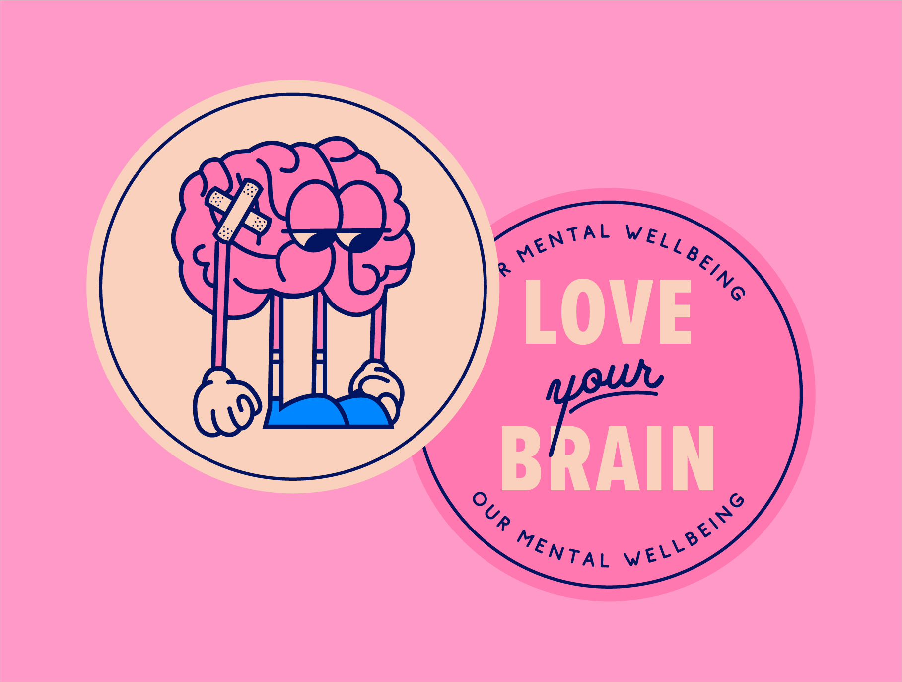

Love
your brain!
what does a healthy mind mean to you?
| client | skills used | key words |
| The University of Sheffield | Illustration / Character Design | Mental Health / Higher Education / Student Communication |
| What does it mean to have a healthy mind? | one |
|---|---|
| Over the past few years, we’ve been seeing more and more productive conversations surrounding mental health and wellbeing. However, despite the progress, many still feel ashamed of their relationship to their mental health and have yet to engage seriously in the resources and help available. | |
| What does it mean to have a healthy mind? | two |
|---|---|
| This can lead to large numbers of young people viewing mental health as something only relevant to other people — those who are clinically diagnosed with specific illnesses or who are manifesting mental health problems in specific ways. | |
How are you protecting your brain?
| visualising emotion | one |
|---|---|
| As part of a preventative approach to encourage early intervention before problems arise, we wanted to encourage all students to engage in good mental health and wellbeing practices. Just as you should exercise and eat well to have a healthy body, you have to put in work to have a healthy mental state, too. This was an entirely new approach for the University, so I created an entirely new visual language to talk to an audience who may have previously been resistant to mental health messaging. | |

| visualising emotion | one |
|---|---|
| To represent this holistic approach, I created a collection of characters to represent different aspects of mental health and wellbeing. The characters experiences all the different emotions and obstacles that we all do and deal with them using a wide range of physical and emotional care. By anthropomorphising the characters, I can create a variety of illustrations visualising topics which are often hard to put into words. | |